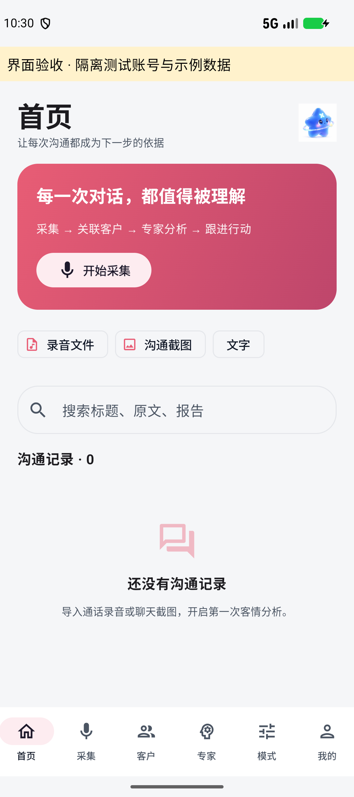
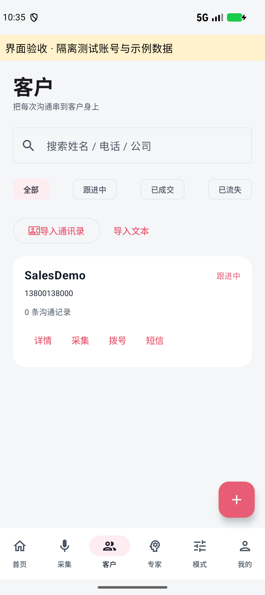
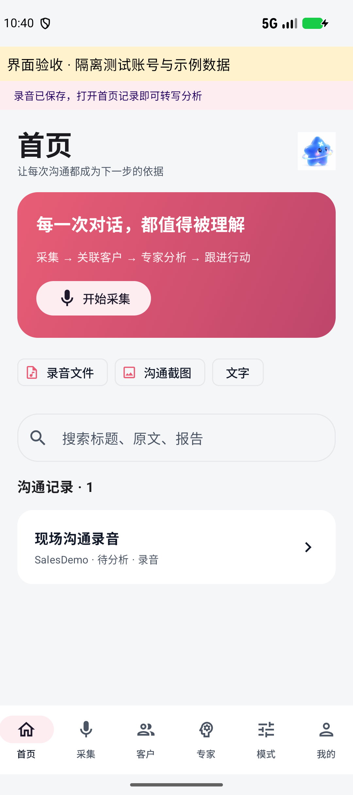

一个随身的销售工作台，
一套与电脑协作的能力。
在合并版 Xfriend Android 上增加客户管理、录音与截图采集、专家及团队分析、电脑版资源导入，并提供五次免密钥试用网关。
版本 0.4.0 · 2026-10-13 · Android 原生 Kotlin / Jetpack Compose · 本报告交给电脑版及云服务开发人员
交付状态与使用前提
这是已实现并构建的 Android 开发版本，保留原版登录注册、图标和玫瑰色主题。手机版仍支持连接电脑，电脑的完整运行时、浏览器、远程桌面等能力继续通过电脑连接使用。
开发签名，可覆盖同签名 0.3；发布前需正式签名。
保留 HTTP / WebSocket 转发，增加资源导出适配。
已部署独立服务，密钥留在服务器；交付源码包不包含共享密钥。
移动端功能与操作逻辑
参考截图的采集、客户、分析模式和个人中心流程，使用原有 Xfriend 图标与 #E85D75 玫瑰色主题。底部使用六个入口；桌面侧栏管理能力收进“我的”及专家管理入口。
| 入口 | 已实现行为 | 说明 |
|---|---|---|
| 首页 | 录音、沟通截图、文字笔记导入；搜索标题、原文和报告；沟通记录详情。 | 数据关联到当前账号及客户。 |
| 采集 | 麦克风录音、计时、动态波形、客户关联、专家/团队选择、模式选择、可选择停止后自动转写分析。 | 自动分析需要明确勾选发送授权；未勾选时先保存在本机。当前无实时字幕。 |
| 客户 | 新建、编辑、删除；姓名/电话/公司搜索；跟进中/已成交/已流失筛选；电话去重；通讯录勾选导入；拨号；客户短信导入。 | 删除客户保留沟通记录；系统短信权限受限制时使用文本导入。 |
| 专家 | 选择单专家或团队；内置销售专家；原版专家/团队/技能/知识管理入口；电脑版导入。 | 本机团队按成员顺序分析并汇总；电脑完整团队运行时可通过连接电脑使用。 |
| 模式 | 综合分析、决策推演、谈判复盘、风险预警、商机挖掘；初次拜访、报价跟进、续约维护。 | 不同模式使用不同报告板块，分析结论需区分事实与待确认信息。 |
| 我的 | 模型配置、试用额度、电脑连接与资源导入、原版技能知识和平台入口、订阅入口、电话状态保护。 | 订阅入口当前为说明页，无支付、扣费或虚构会员权益。 |
六位销售专家组成客情分析团队
专家不会依据电话号码或音色推断客户的敏感属性，也不生成没有依据的成交概率。默认提示词要求引用沟通原文。
界面验收截图
下图来自独立 .qa 测试包和隔离示例账号，不代表真实客户或线上分析结果。正式交付 APK 不包含测试 Activity。



技术架构与数据流
| 模块 | 实现位置 | 职责 |
|---|---|---|
| 移动界面 | SalesScreen.kt | 六页导航、移动表单、权限、分析授权与导入预览。 |
| 业务状态 | SalesViewModel.kt / SalesDomain.kt | 客户、沟通记录、专家职责、报告模式、任务取消及稳定重试标识。 |
| 持久化 | SalesStore.kt | 账号作用域下的 AtomicFile + Android Keystore AES-GCM，保存客户、报告、模型密钥等。 |
| 媒体 | SalesMedia.kt | AudioRecord PCM → WAV；MediaCodec 将系统音频解码为 WAV；图片采样压缩为 JPEG。 |
| 网络 | SalesApi.kt | OkHttp HTTPS、取消传播、响应上限；MiMo ASR/TTS 与视觉格式；配对导入后注销临时会话。 |
| 电脑连接 | desktop-bridge/bridge.py / exporter.py | 复用已认证桌面入口，校验配对及账号空间，优先完整导出，旧版只读适配。 |
| 五次额度 | trial-gateway/gateway.py | 签名租约认证、固定小米上游、原子预留、成功计次、失败退款、加密结果缓存。 |
客户资料与模型密钥保存在当前云账号/空间对应的加密状态文件，禁止 Android 备份。原始录音及图片位于应用私有 noBackup 目录；它们当前没有单独的文件级加密。通用聊天继续使用原有 Store 和本机 AgentRuntime。
录音最长 10 分钟，解码后的音频最多 20 MB；图片压缩后最多 5 MB；单条沟通文字最多 12,000 字；资源导入包最多 4 MB。长文件应分段。小米接口请求格式依据官方 ASR 文档、TTS 文档和视觉文档实现。
电脑版需要配合的接口
沿用 0.3 的连接协议和账号隔离要求，在电脑端新增完整资源导出。本次没有修改 D:\octop 的桌面业务代码；独立连接桥已增加适配，方便迁移期使用。
1. 完整导出接口
GET /api/mobile/export?include_secrets=0
# 电脑版 Go 账号桥代理到已认证的 Python 后端
# 连接桥对手机公开 GET /mobile/export?include_secrets=0
# 手机请求必须同时具有配对 Cookie 和精确 Origin
# include_secrets=1 必须由用户主动勾选；缺省不导出密钥
# Cache-Control: no-store
{
"format": "xfriend-mobile-export",
"version": 1,
"experts": [{
"id": "sales-adviser", "name": "销售顾问", "prompt": "完整专家提示词",
"skills": ["sales-method"], "knowledge": ["product-guide"]
}],
"teams": [{"id": "sales-team", "name": "客情分析团队", "members": ["sales-adviser"]}],
"skills": [{"id": "sales-method", "name": "销售方法", "content": "Markdown 技能正文"}],
"knowledge": [{"id": "product-guide", "name": "产品知识", "content": "可读知识正文"}],
"providers": [{
"id": "xiaomi", "name": "小米 MiMo", "base_url": "https://api.xiaomimimo.com/v1",
"models": ["mimo-v2.6-flash"], "api_key": ""
}],
"warnings": []
}对接文件：JSON Schema · 无密钥示例包。此外必须校验引用完整性、唯一 ID、总字节数及 HTTPS URL。
独立连接桥会追加来自当前桌面会话的 source.user_id / source.space_id，手机在线导入要求与当前手机登录身份一致。通过文件手动导入则先由用户确认资源与密钥。手机把桌面 ID 映射到稳定的 desktop 命名空间，重复导入更新同一资源。
- 专家提示词需要导出实际生效的 SOUL / AGENTS / 自定义提示词组合，保持顺序；技能和知识引用必须随包携带，禁止悬空引用。
- 团队
members使用本包 expert ID，最多 8 位。当前手机执行顺序协作与汇总，不导入桌面运行中的任务、工具授权或工作区路径。 - 知识库应导出用户有权读取的文本资料，不能直接打包远程存储凭据、数据库、全量客户文件或向量索引。
- 模型配置导出 HTTPS Base URL 和字符串模型 ID 列表；密钥仅在显式同意后导出。不得混入桌面本地 Bearer、云账号 access/refresh token、Cookie 或授权私钥。
- 所有资源均按当前登录用户和空间权限过滤；导出过程中再次校验身份，切换账号/空间后撤销配对。
- 包上限 4 MB；不要默默截断。电脑版建议提供资源勾选界面和体积预估。
2. 现有代码落点
| 位置 | 建议改动 |
|---|---|
| src/octop/api/routers/experts.py | 复用专家模板与已发布快照读取服务；导出实际提示词和依赖。 |
| src/octop/api/routers/teams.py | 从有权访问的团队与成员生成导出关系。 |
| src/octop/api/routers/providers.py | 复用 provider 元数据，单独控制敏感密钥导出权限。 |
| infra/ 下新增资源导出服务 | 业务拼装放 infra；路由只做鉴权、参数校验和返回，保持现有模块边界。 |
| api/app.py / openapi_meta.py | 注册 typed response_model、summary、tags，并在 Scalar /api/docs 复核。 |
| desktop/src/desktop_server.go | 增加 /mobile/export 或转发桥能力；保持 Host / Origin / Cookie / JWT 现有边界。 |
| dashboard 设置/专家管理 | 资源勾选、导出 JSON、是否包含密钥的明确确认，以及手机连接入口。 |
旧版兼容适配仅包含专家目录中的可读提示词、随专家暴露的 Markdown 技能及 HTTPS 模型配置。完整团队、独立技能包、知识库必须由电脑版完整导出接口提供；手机预览会显示兼容范围提示。
3. 保留远程电脑能力
原有 /mobile/status → /mobile/pair → HttpOnly 配对 Cookie → /chat 流程保持不变。HTTP、SSE 与 WebSocket 继续转发；手机切回“此手机”时注销连接，不退出电脑云账号。完整浏览器、工作区、远程桌面等仍由电脑版按已有权限执行。
五次免密钥体验与订阅预留
服务器保存共享 MiMo 密钥。APK 和资源导出包中没有该共享密钥。试用用户不选择内部模型，只看到剩余次数；自己的模型配置页面可填写自有密钥和模型。
| 规则 | 实现 |
|---|---|
| 认证 | X-Xfriend-Lease 传输已有云账号 Ed25519 签名租约；服务器用已发布公钥验证产品、时间、用户与空间字段。租约是 Bearer 凭据，只能走 HTTPS，不能记录到日志。 |
| 额度 | 同一 user_id 共 5 次，跨设备/空间共用。一次分析含转写/识图、专家或团队分析及汇总；播报是独立任务。 |
| 并发 | SQLite WAL + BEGIN IMMEDIATE 原子预留；最多 4 个上游任务同时运行。该实现要求一个网关进程独占数据库。 |
| 失败与重试 | 失败退回次数。request_id + 请求指纹防止同一任务重试重复扣次；重复 ID 不同内容返回 409。手机对相同分析输入生成稳定标识。 |
| 内部模型 | 服务端默认对话/视觉 MiMo 2.6 Flash，ASR 2.5，预置 TTS 2.5；不从客户端接受任意上游地址或模型名。 |
| 缓存与账本 | 结果由 Fernet 加密缓存用于重试，额度账本持久化；启动时清理 24 小时前缓存并恢复未完成预留。不要删除额度数据库来升级。 |
| 退出与撤销 | 当前按云租约有效期验证，最长 72 小时，不提供立即撤销查询。正式订阅建议由账号服务提供即时租约/会话撤销检查。 |
部署步骤
# 在独立服务器的 trial-gateway 目录
uv sync --frozen --no-dev
# 使用系统 Secret / 环境变量注入 MIMO_API_KEY，不写进源码或镜像
# XFRIEND_TRIAL_DB 指向持久化卷；默认 data/trial.sqlite
uv run --no-sync python gateway.py
# 默认仅监听 127.0.0.1:8787
# 受信任 HTTPS 反向代理 → 127.0.0.1:8787
# 客户端填入该 HTTPS 基础地址
GET /health # 不含用户、密钥或模型配置
GET /v1/quota # X-Xfriend-Lease，返回 remaining / limit
POST /v1/tasks # request_id、operation、kind、text/media、prompt、roles
# operation: analyze | speak；kind: text | audio | image
# 200: text/report 或 audio，加 remaining
# 401 授权失效；402 五次用完；409 重试冲突；502 上游失败且退款手机版已预置 HTTPS 基础地址 https://113.219.170.192。服务器已安装非 root 网关服务、持久化账本、Nginx、Certbot 5.8 及 HTTPS 启用脚本。公网 80/443 实际可达后，执行 /opt/xfriend-trial/activate-https.sh 签发六天 IP 证书并设置每天两次自动续期检查。当前不会关闭证书验证，也不会用 HTTP 传输账号租约和客户资料。共享密钥没有硬编码；真实小米实测仅使用合成文本、语音和纯色图片，未发送真实客户数据。证书方案依据：Let's Encrypt 官方说明。
自有模型
支持配置 MiMo 2.6 Pro / Flash、2.5 Pro / 2.5、2.5 ASR、2.5 TTS、VoiceDesign 与 VoiceClone。语音模型使用 Chat Completions 协议，TTS 文本位于 assistant 消息，语音结果读取 audio.data。VoiceClone 要求用户确认授权并选择 WAV 样本；VoiceDesign 使用文字描述，不传预置音色参数。其他供应商对话可使用 OpenAI 兼容接口，语音能力需要兼容小米格式。
订阅入口已预留，支付、套餐、权益校验和购买恢复尚未实现；不要仅凭手机本地会员状态放开共享密钥额度。
验证证据与当前限制
验证命令及日志随项目交付，最终检查结果见 verify-final-0.4.log、python-tests-final-0.4.log 与 smoke-sales-0.4.log。
| 验证 | 范围 | 结果依据 |
|---|---|---|
| Android 单元测试 | 保留原 31 项，新增 14 项导入关系、去重、URL、ASR/TTS 与 WAV 格式测试。 | Gradle :app:testDebugUnitTest。 |
| Android 构建与 Lint | 正式默认配置构建 APK；不包含 .qa FixtureActivity；开发签名。 | :app:assembleDebug :app:lintDebug。 |
| 服务端与连接桥 | 五次并发上限、重试、失败退款、重启持久化、签名过期、密钥不回传；原 HTTP/WS 连接及导出权限。 | 31 项 pytest；使用合成上游与签名测试账号。 |
| 模拟器 | 独立 .qa 包验证移动页面、客户录入、录音权限、WAV 保存、原文编辑及录音/客户重启恢复。模式持久化由单元测试验证；后续 UI 验收受 Android 37 预览模拟器系统无响应影响。 | ADB/UI Automator 记录与截图；不读取真实客户数据。 |
- Android 普通应用无法保证直接获取电话上下行音频；当前支持系统通话录音导入和麦克风采集，不请求系统专属 CAPTURE_AUDIO_OUTPUT 权限。
- READ_SMS 是 Android 的受限权限，安装器/系统可能不授予。拒绝时不伪装成功，保留文本文件导入。参见 Android 官方权限说明。
- 录音为前台采集，切到后台会停止并保存；没有后台录音服务，也没有实时字幕。勾选自动分析后，停止可发起完整转写。
- 图片提取需要人工校正，当前先在沟通详情展示识别原文与报告，再由用户关联或编辑客户；不自动把图片中的姓名/电话直接批量写入客户资料。
- 本机销售分析按专家提示词、关联的 Markdown 技能与文本知识执行，不等同于电脑版全部工具沙箱、向量 RAG 和并行调度能力。完整能力通过连接电脑继续使用。
- 当前报告正文以可选择的文本显示，Markdown 标记保留并可导出；未接入富文本排版库。
- 尚需真机验证 OEM 通话录音文件、权限拒绝/恢复、长录音、移动网络及小米 API 复杂业务识别效果；尚未完成生产版签名与应用商店发布。
交给另一边的实施指令
请按 D:\xfriend-android\docs\DESKTOP-INTEGRATION-0.4.html 配合 Android 0.4。
优先实现：
1. 电脑版新增 GET /api/mobile/export?include_secrets=0|1，严格采用报告中的
xfriend-mobile-export/version=1 格式，导出当前用户/空间有权访问的
专家、团队、Markdown 技能、文本知识及 HTTPS 模型配置。
2. 导出实际生效的专家提示词，保持成员及技能/知识引用完整。
默认不含密钥；用户主动勾选且有权限时才包含 provider API Key。
禁止导出电脑本地 Bearer、云账号 token、Cookie 和任意认证私钥。
3. 保留 0.3 手机配对协议和 HTTP/WS 能力，配对后提供 /mobile/export；
同时提供电脑端资源选择与 JSON 下载入口，包体不超过 4 MB。
4. trial-gateway 已部署到 113.219.170.192，手机已预置该 HTTPS 地址。
继续核实公网 80/443 连接超时原因；端口可达后执行服务器上的
/opt/xfriend-trial/activate-https.sh，并检查证书续期定时器。
升级时保留额度账本和缓存密钥，不要重置五次额度。
5. 加入跨账号/空间导出拒绝、重复导入、缺失引用、敏感字段过滤测试。
按仓库 AGENTS.md 运行 make all、前端 typecheck/build、i18n 与 API 文档检查。
验收：同一账号手机配对后预览导入全部所选资源；密钥默认不导出；
专家关联资料可用于手机分析；同一账号跨手机累计五次试用，第六次 402；
失败退款、相同任务重试不重复扣次；手机退出不退出电脑账号。
订阅阶段再接入真实支付、服务端权益、购买恢复及账号服务即时撤销查询。
请不要把共享 API Key 放到网页、APK、桌面导出包或提交到 Git。